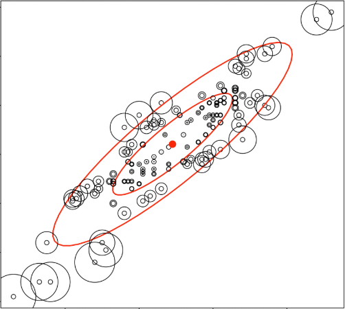

Time Series anomaly detection
Time series anomaly detection
"An anomaly is an observation which deviates so much from other observations as to arouse suspicions that it was generated by a different mechanism." (Hawking 1980) "Anomalies [...] may or not be harmful." (Esling 2012)
Types of anomalies
The anomalies in an industrial system are often influenced by external factors such as speed or product being manufactured. There external factors represent the context and should be added to the feature vector.
Furthermore, there might be a difference between what you detect and what are the people actually interested in on site.
On industrial systems, you would find different types of anomalies signatures. A bearing degrading or gear wear would result in a progressive shift from the normal state. Other pattern might be detected with such anomalies : the mean is going up or the amplitude of the phenomenon is increasing or a cyclic pattern appear more often.
When a component breaks or when something gets stuck the anomaly signature would result in a persitent change. This type of signature would also appear after a poorly performed maintenance. IN this case, a stepwise pattern appears in the time series data.
Other anomalies can appear in the data. For example, a measuring error or a short current spike caused by an induction peak can appear and is considered an anomaly because it is clearly out of trend. However, it is often the case that those anomalies are don't represent errors and are a normal part of the process.
In order to alert on the anomalies that represent an error or a degradation of the system and filter out the spike anomalies, some feature engineering has to be done.
Feature extraction
This represent the most important part of the analysis. Either you use knowledge of the experts, intuition of literatures (especially for bearing and rotating machines).
Or you perform an automated feature extraction using packages such as :
- HTCSA (highly comparative time-series analysis) is a library implementing more than 7000 features (use pyopy for Python on Linux and OSX). It allows to normalize and clster the data, produce low dimensional representation of the data, identify and discriminate features between different classes of time series, learn multivariate classification models, vizualise the data, etc.
- Catch22 reduces the 7000 features coded in HTCSA to the 22 that produced the best results across 93 real world time-series datasets.
- tsfresh is a package that automatically calculates a large number of time series characteristics and contains methods to evaluate the explaining power and importance of such characteristics for regression or classification tasks
A combinaison of both automatically extracted knowledge and human knowledge can be combined. For instance, you can filter the spikes with a rolling median and then use catch22 on the resulting data. Or you can in parallel use your knowledge about bearing degradation and some automatically extracted feature.
Unsupervised Anomaly Detection algorithms
When you are using unsupervised anomaly detection algorithm you postulate that the majority is normal and you try to find outliers. Those outliers are the anomalies. This approach is useful when you only have unlabeled data.
Algorithms used in this case are often :
-
nearest neighbor / density based :
- Global : K-Nearest Neighbor (K-NN), DBSCAN
- Local : Local Outlier Factor (LOF)
-
Clustering based:
- Global : Cluster Based Local Outlier Factor (CBLOF/uCBLOF)
- Local : Local Density Cluster-based Outlier Factor (LDCOF)
The tricky part is to set k, the number of clusters and the other hyperparameters.
Furthermore, this kind of alogrithms perform poorly against persitant changes because the normal and anormal states would be in two clusters but they would be identified as normal by the algorithm since they represent the majority of the data.
Semi-supervised Anomaly Detection algorithms
The first approach is to train the algorithm on healthy data and detect an anomaly when the distance between the measured point and the healthy cluster exceeds a value. * Distance based measures to healthy states such as the measure of the Mahalanobis distance 
You can also model the surface of the healthy state and detect an anomaly when the measure crosses the surface :
-
Rich Representation of Healthy State:
- One-class Support Vector Machines (SVM)
- One-class Neuronal Networks
Finally you can perform a dimension reduction of the space by finding new basis function of the state, and keeping only the n most important feature vector. An anomaly is detected when the reconstruction error grows because it is not part of what is considered normal.
-
Reconstruction Error with Basis Functions :
- Principal Component Analysis (PCA)
- Neuronal Network (Autoencoders)
Very important : Do not use dimensionality reduction (like PCA) before the anomaly detection because you would throw away all the anomalies.

This kind of semi supervised approach is strongly dependent on the data. Hence if you don't have a healthy state in the training set then the output of the algorithm won't be useful.
Supervised anomaly detection algorithm
Here, you apply classical classification methods for machine learning. However, be careful when training your classifiers because you have very imbalanced classes.
Conclusions
Anomalies may or may not be harmful! Hence you have to focus on the one that can damage your system. Anomaly interpretation depend a lot on the context (spike, progressive change, persitent change) Questions for feature extraction (collective, contextual or point like):
- which external influence ?
- which kind of events should be detected ?
Questions for choice of algorithm :
- Does data have labelled events ? -> Supervised learning
- Is healthy state marked ? -> Semi Supervised
- If no knowledge at all -> Unsupervised
Questions for model deployment
- When is information needed (real-time vs historic)?